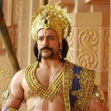

Home
Pandavas
Supporting_roles
Female_roles
Kauravas cast
Arpit Ranka
DURYODHANA Duryodhana(267 episodes,2013-2014)

Duryodhana (Sanskrit: दुर्योधन, IAST: Duryodhana), also known as
Suyodhana,[1][2] is the primary antagonist in the Hindu epic
Mahabharata. He was the eldest of the Kauravas, the hundred sons of the
king Dhritarashtra and his queen Gandhari. Being the first-born son of
the king, he was the crown prince of the Kuru Kingdom and its capital of
Hastinapura, often forced into ceding the title to his cousin
Yudhishthira, who was one of the Pandava brothers and older than he.
Aided by his maternal uncle Shakuni, Duryodhana tricked the Pandavas
into surrendering their kingdom and forced them to go into exile. Later,
Duryodhana waged the Kurukshetra War against his cousins and was helped
by the warriors Bhishma, Drona and Karna. On the eighteenth day of the
war, he was killed by Bheema. Duryodhana used his greater skill in
wielding the mace to defeat his opponents. He was also an extremely
courageous warrior but his greed and arrogance were the two qualities
said to have led to his downfall.
Nirbhay Wadhwa
DUSHASANA Dushasana

When Dhritarashtra's queen Gandhari's pregnancy continued for an
unusually long time, she beat her womb in frustration and out of
jealousy towards Kunti, the wife of Pandu, who had just given birth to
Yudhishthira (the eldest of the five Pandava brothers). At this, a
hardened mass of grey-coloured flesh emerged from her womb. Gandhari was
devastated and called upon Vyasa, the great sage who had prophesied she
would give birth to one hundred sons, to redeem his words.[2] Vyasa
divided the ball of flesh into one hundred and one equal pieces, each
piece no bigger than a thumb. He put them in pots of milk, which were
sealed and buried in the earth for two years. At the end of the second
year, the first pot was opened and Duryodhana emerged. Within a period
of one month all the other 99 sons and single daughter of Dhritarashtra
were born. Dushasana was the second after Duryodhana.[2] Dushasana was
devoted to his older brother Duryodhana. He (along with Duryodhana and
Shakuni) was very closely involved in the various schemes and plots to
kill the Pandavas.
Sandeep Aurora
Vikarna(267 episodes,2013-2014)

In the Hindu epic Mahabharata, Vikarna (Sanskrit: विकर्ण) was the third
Kaurava, a son of Dhritarashtra and Gandhari, and a brother to the crown
prince Duryodhana. Vikarna is also referred to as the most reputable of
the Kauravas.[1] Vikarna was the only Kaurava who opposed the
humiliation of Draupadi, the wife of his cousins of the Pandavas after
Yudhisthira lost her freedom in a game of dice to Duryodhana.[2]